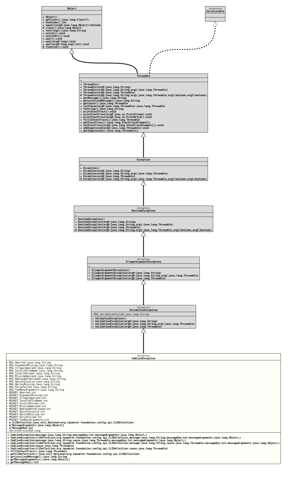

java.lang.Object
java.lang.Throwable
java.lang.Exception
java.lang.RuntimeException
java.lang.IllegalArgumentException
org.tquadrat.foundation.exception.ValidationException
org.tquadrat.foundation.config.CmdLineException
- All Implemented Interfaces:
Serializable
@ClassVersion(sourceVersion="$Id: CmdLineException.java 1061 2023-09-25 16:32:43Z tquadrat $")
@API(status=STABLE,
since="0.0.1")
public final class CmdLineException
extends ValidationException
Signals an error in the user input.
The message keys corresponds to the current default message by the
suffix: the default message for
MSGKEY_Aborted
is
MSG_Aborted
and so on.
- Author:
- Thomas Thrien (thomas.thrien@tquadrat.org)
- Thanks to:
- Kohsuke Kawaguchi (kk@kohsuke.org)
- Version:
- $Id: CmdLineException.java 1061 2023-09-25 16:32:43Z tquadrat $
- Since:
- 0.0.1
- See Also:
- UML Diagram
-

UML Diagram for "org.tquadrat.foundation.config.CmdLineException"
{kind=link}
-
Field Summary
FieldsModifier and TypeFieldDescriptionprivate final Optional<CLIDefinition> The CLI definition for the argument/option that caused this exception.private final Object[]The arguments for the message that is retrieved with them_MessageKey.private final intThe message key.static final StringThe default error message: "The command line parsing was aborted due to an exception: %1$s".static final StringThe error message for an argument that is missing on the command line: "The mandatory argument \'%1$s\' is missing on the command line".static final StringThe error message for an illegal option argument: "\'%2$s\' is not a valid value for \'%1$s\'".static final StringThe error message for an invalid file name on the command line: "\'%s\' cannot be parsed as a valid file name".static final StringThe error message for an invalid format: "The date format pattern \'%1$s\' is not valid".static final StringThe error message for a missing option argument: "Option \'%1$s\' requires an argument".static final StringThe error message for an argument where none is allowed: "No arguments allowed: %1$s".static final StringThe error message for an invalid option: "The option \'%1$s\' is invalid".static final StringThe error message for a mandatory option that is missing on the command line: "The mandatory option \'%1$s\' is missing on the command line".static final StringThe message for an unspecified failure of the command line parsing: "Parsing the command line failed".static final StringThe error message for too many arguments on the command line: "Too many arguments provided: %1$s".static final intThe message key for the default error message.static final intThe message key for the error message about an argument that is missing on the command line.static final intThe message key for an error message about an illegal operand.static final intThe resource bundle key for the message about an invalid file name String on the command line.static final intThe message key for an error message about an invalid format.static final intThe message key for an error message about a missing option argument.static final intThe message key for an error message about an argument where none is allowed.static final intThe message key for the error message about an invalid option.static final intThe message key for the error message about an option that is missing on the command line.static final intThe message key for the message about an unspecified failure of the parsing.static final intThe message key for the error message about too many arguments on the command line.private static final longThe serial version UID for objects of this class: -8574071211991372980L.Fields inherited from class org.tquadrat.foundation.exception.ValidationException
MSG_ValidationFailed -
Constructor Summary
ConstructorsConstructorDescriptionCmdLineException(String message, int messageKey, Object... messageArguments) Creates a newCmdLineExceptioninstance.CmdLineException(String message, Throwable cause, int messageKey, Object... messageArguments) Creates a newCmdLineExceptioninstance.CmdLineException(Throwable cause) Creates a newCmdLineExceptioninstance.CmdLineException(Optional<CLIDefinition> cliDefinition, Throwable cause) Creates a newCmdLineExceptioninstance.CmdLineException(CLIDefinition cliDefinition, String message, int messageKey, Object... messageArguments) Creates a newCmdLineExceptioninstance.CmdLineException(CLIDefinition cliDefinition, String message, Throwable cause, int messageKey, Object... messageArguments) Creates a newCmdLineExceptioninstance.CmdLineException(CLIDefinition cliDefinition, Throwable cause) Creates a newCmdLineExceptioninstance. -
Method Summary
Modifier and TypeMethodDescriptionfinal Throwablefinal Optional<CLIDefinition> Returns theCLIDefinitionthat triggered the exception.final Stringfinal Object[]Returns the message arguments.final intReturns the resource bundle key for the alternative message.Methods inherited from class java.lang.Throwable
addSuppressed, getCause, getMessage, getStackTrace, getSuppressed, initCause, printStackTrace, printStackTrace, printStackTrace, setStackTrace, toString
-
Field Details
-
MSG_Aborted
The default error message: "The command line parsing was aborted due to an exception: %1$s".- See Also:
-
MSG_ArgumentMissing
The error message for an argument that is missing on the command line: "The mandatory argument \'%1$s\' is missing on the command line".- See Also:
-
MSG_IllegalOperand
The error message for an illegal option argument: "\'%2$s\' is not a valid value for \'%1$s\'".- See Also:
-
MSG_InvalidFileName
The error message for an invalid file name on the command line: "\'%s\' cannot be parsed as a valid file name".- See Also:
-
MSG_InvalidFormat
The error message for an invalid format: "The date format pattern \'%1$s\' is not valid".- See Also:
-
MSG_MissingOperand
The error message for a missing option argument: "Option \'%1$s\' requires an argument".- See Also:
-
MSG_NoArgumentAllowed
The error message for an argument where none is allowed: "No arguments allowed: %1$s".- See Also:
-
MSG_OptionInvalid
The error message for an invalid option: "The option \'%1$s\' is invalid".- See Also:
-
MSG_OptionMissing
The error message for a mandatory option that is missing on the command line: "The mandatory option \'%1$s\' is missing on the command line".- See Also:
-
MSG_ParseFailed
The message for an unspecified failure of the command line parsing: "Parsing the command line failed".- See Also:
-
MSG_TooManyArguments
The error message for too many arguments on the command line: "Too many arguments provided: %1$s".- See Also:
-
MSGKEY_Aborted
The message key for the default error message.- See Also:
-
MSGKEY_ArgumentMissing
The message key for the error message about an argument that is missing on the command line.- See Also:
-
MSGKEY_IllegalOperand
The message key for an error message about an illegal operand.- See Also:
-
MSGKEY_InvalidFileName
The resource bundle key for the message about an invalid file name String on the command line.- See Also:
-
MSGKEY_InvalidFormat
The message key for an error message about an invalid format.- See Also:
-
MSGKEY_MissingOperand
The message key for an error message about a missing option argument.- See Also:
-
MSGKEY_NoArgumentAllowed
The message key for an error message about an argument where none is allowed.- See Also:
-
MSGKEY_OptionInvalid
The message key for the error message about an invalid option.- See Also:
-
MSGKEY_OptionMissing
The message key for the error message about an option that is missing on the command line.- See Also:
-
MSGKEY_ParseFailed
The message key for the message about an unspecified failure of the parsing.- See Also:
-
MSGKEY_TooManyArguments
The message key for the error message about too many arguments on the command line.- See Also:
-
m_CLIDefinition
The CLI definition for the argument/option that caused this exception. -
m_MessageArguments
The arguments for the message that is retrieved with them_MessageKey. -
m_MessageKey
The message key. -
serialVersionUID
The serial version UID for objects of this class: -8574071211991372980L.- See Also:
-
-
Constructor Details
-
CmdLineException
Creates a newCmdLineExceptioninstance.- Parameters:
message- The error message.messageKey- The resource bundle key for an alternative message.messageArguments- The arguments for the generation of the alternative message.
-
CmdLineException
public CmdLineException(CLIDefinition cliDefinition, String message, int messageKey, Object... messageArguments) Creates a newCmdLineExceptioninstance.- Parameters:
cliDefinition- The CLI definition for the argument/option that caused this exception.message- The error message.messageKey- The resource bundle key for an alternative message.messageArguments- The arguments for the generation of the alternative message.
-
CmdLineException
public CmdLineException(String message, Throwable cause, int messageKey, Object... messageArguments) Creates a newCmdLineExceptioninstance.- Parameters:
message- The error message.cause- The exception that caused this exception.messageKey- The resource bundle key for an alternative message.messageArguments- The arguments for the generation of the alternative message.
-
CmdLineException
public CmdLineException(CLIDefinition cliDefinition, String message, Throwable cause, int messageKey, Object... messageArguments) Creates a newCmdLineExceptioninstance.- Parameters:
cliDefinition- The CLI definition for the argument/option that caused this exception.message- The error message.cause- The exception that caused this exception.messageKey- The resource bundle key for an alternative message.messageArguments- The arguments for the generation of the alternative message.
-
CmdLineException
Creates a newCmdLineExceptioninstance.- Parameters:
cause- The exception that caused this exception.
-
CmdLineException
Creates a newCmdLineExceptioninstance.- Parameters:
cliDefinition- The CLI definition for the argument/option that caused this exception.cause- The exception that caused this exception.
-
CmdLineException
Creates a newCmdLineExceptioninstance.- Parameters:
cliDefinition- An instance ofOptionalthat holds the CLI definition for the argument/option that caused this exception.cause- The exception that caused this exception.
-
-
Method Details
-
fillInStackTrace
- Overrides:
fillInStackTracein classThrowable
-
getCLIDefinition
Returns theCLIDefinitionthat triggered the exception.- Returns:
- An instance of
Optionalthat holds the CLI definition.
-
getLocalizedMessage
- Overrides:
getLocalizedMessagein classThrowable
-
getMessageArguments
Returns the message arguments.- Returns:
- The message arguments.
-
getMessageKey
Returns the resource bundle key for the alternative message.- Returns:
- The message key.
-